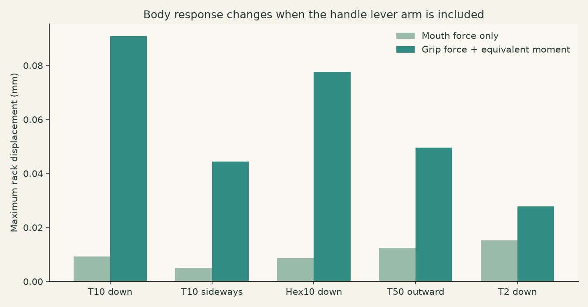
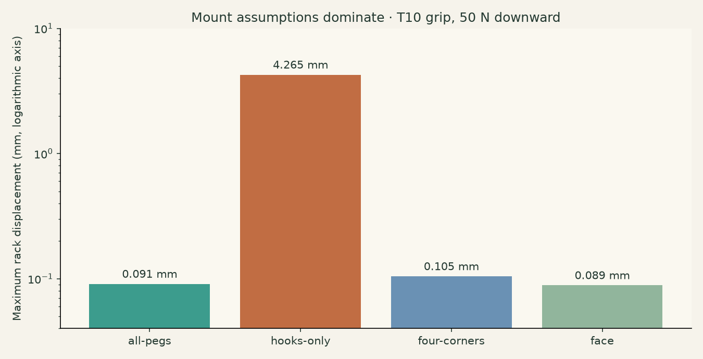
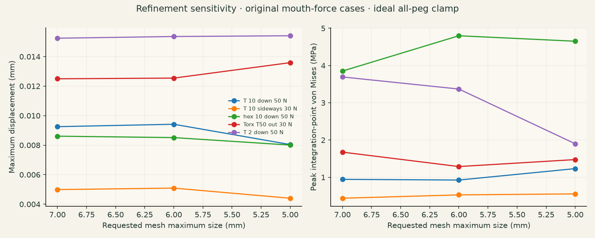
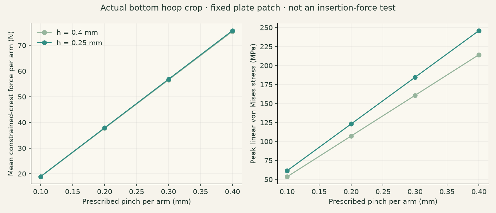
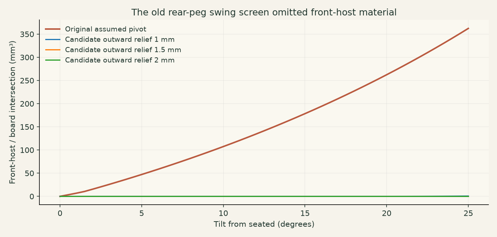
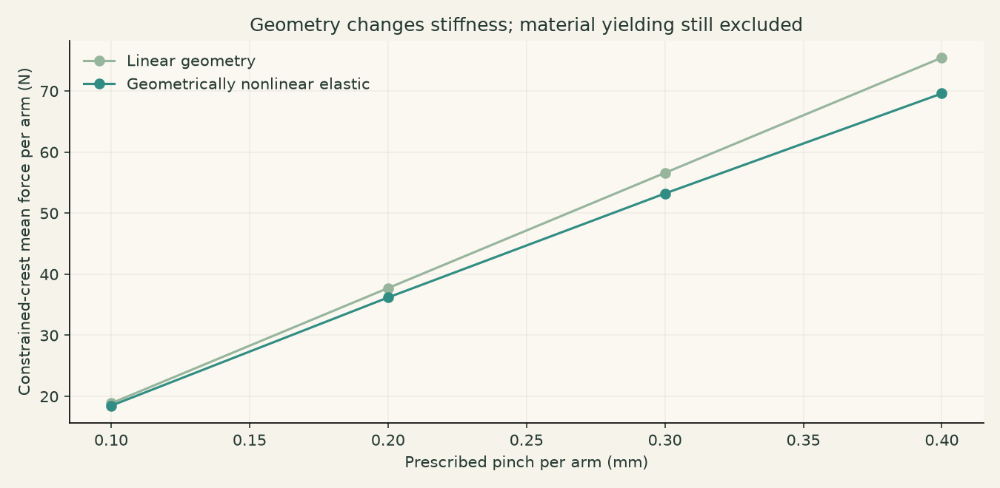
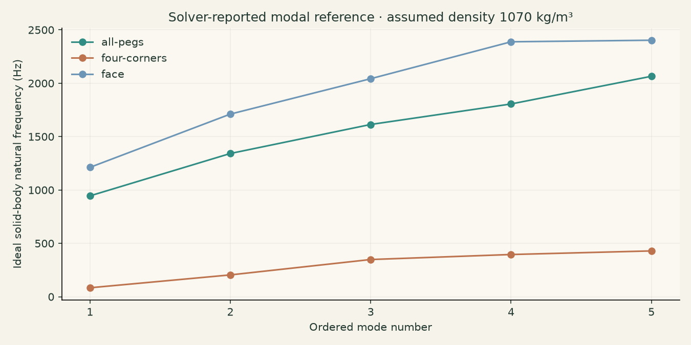

What the extended checks changed
The published v2 fan is a prototype baseline, not a physically qualified finished rack. Its owner-tested sockets did not provide the expected centering and rotation restraint; the revised 3/5 mm straight-guide coupons are separate fit trials.
The original stiffness numbers are reproducible for forces at the mouths, but they are not handle-tip load predictions. The same assumed installation pivot also brings front-host material into the board. No printed load rating follows from these results.
Exact geometry and traceability
The audit uses the immutable installed STEP 62a8acee8145f11967618944d6b4e0e2a54f3d96c428f3a197c91fc82f86798a. FreeCAD 1.1.3/OCC 7.8.1 reports one valid solid, one shell and 5,037 faces. Its native volume is 1527.603 cm³. The released print STL is closed, has one component and differs in volume by 0.00695%.
The rear extraction independently finds 90 pegs in ten rows of nine. Sources, hashes, native checks, solver receipts, display fields and film provenance accompany the downloadable review package. Original nominal anchor certificates remain separate from this changed-fit holder.
Loads: the missing lever arm
The earlier five cases spread a force over nodes in a small spherical patch around each socket mouth. That is a legitimate numerical mouth-load screen. Its “lean on the handle” wording omitted the bending moment caused by applying that force at the handle.
The T10 model has about 183 mm from its mouth to grip centre. The new grip cases preserve the resultant force and the moment about the load-patch centroid, using a minimum-norm nodal force distribution. This is an equivalent wrench, not a modeled steel-tool/socket contact. Local peaks depend on how that patch is chosen.
Global force and moment balance are independently checked against the input deck and support reactions. Cases exceeding the acceptance threshold are excluded, rather than treated as plausible-looking solutions.

Fixture sensitivity and the real mount
The old “pegs” fixture fixes every node behind Y=0.10 mm—including loose bearing pegs and flexible locking material. It can carry tension and restraint those features may not supply physically. It is not generally a conservative model of a real pegboard.
The additional fixtures fix only the upper hook row, four corner regions, or the front/rear contact region. These are ideal sensitivity cases; they do not include hole clearance, unilateral contact, friction, compliant hardboard, wall attachment, crushing ribs or snap-arm motion.

With the same 50 N T10 grip load, all-peg clamping gives about 0.091 mm maximum rack displacement; hooks-only gives about 4.27 mm. The weak fixture also produces stresses beyond the material-reference range, so its linear continuation is not a sustainable-load prediction. Four-corner restraint gives about 0.105 mm. This spread matters far more than choosing a slightly different solid modulus.
| Case | Fixture | Load application | Rack max mm | Work-equivalent load-point mm | Gauss peak MPa | Unweighted p99 MPa |
|---|---|---|---|---|---|---|
| T-handle 10 down 50 N | all-pegs | mouth | 0.00925 | 0.00617 | 0.94 | 0.086 |
| T-handle 10 sideways 30 N | all-pegs | mouth | 0.00499 | 0.00242 | 0.44 | 0.040 |
| hex 10 down 50 N | all-pegs | mouth | 0.00861 | 0.00424 | 3.85 | 0.075 |
| Torx T50 out 30 N | all-pegs | mouth | 0.01250 | 0.00805 | 1.68 | 0.110 |
| T-handle 2 down 50 N | all-pegs | mouth | 0.01525 | 0.00881 | 3.69 | 0.209 |
| T-handle 10 down 50 N | all-pegs | grip-wrench | 0.09090 | 1.14042 | 15.48 | 0.660 |
| T-handle 10 sideways 30 N | all-pegs | grip-wrench | 0.04439 | 0.40496 | 8.57 | 0.246 |
| hex 10 down 50 N | all-pegs | grip-wrench | 0.07756 | 0.27809 | 57.39 | 0.498 |
| Torx T50 out 30 N | all-pegs | grip-wrench | 0.04949 | 0.52068 | 20.11 | 0.664 |
| T-handle 2 down 50 N | all-pegs | grip-wrench | 0.02784 | 0.05177 | 7.37 | 0.472 |
| T-handle 10 down 50 N | hooks-only | grip-wrench | 4.26505 | 3.42870 | 146.22 | 2.295 |
| T-handle 10 sideways 30 N | hooks-only | grip-wrench | 0.14870 | 0.54820 | 13.98 | 0.339 |
| hex 10 down 50 N | hooks-only | grip-wrench | 3.00695 | 1.46814 | 107.52 | 1.542 |
| Torx T50 out 30 N | hooks-only | grip-wrench | 1.10185 | 0.81150 | 43.01 | 1.234 |
| T-handle 2 down 50 N | hooks-only | grip-wrench | 2.89562 | 1.09043 | 107.97 | 1.672 |
| T-handle 10 down 50 N | four-corners | grip-wrench | 0.10454 | 1.21144 | 25.51 | 0.719 |
| T-handle 10 sideways 30 N | four-corners | grip-wrench | 0.20259 | 0.60613 | 27.24 | 0.533 |
| hex 10 down 50 N | four-corners | grip-wrench | 0.10784 | 0.36283 | 57.39 | 0.570 |
| Torx T50 out 30 N | four-corners | grip-wrench | 0.32781 | 0.86799 | 30.13 | 1.180 |
| T-handle 2 down 50 N | four-corners | grip-wrench | 0.04086 | 0.06405 | 14.78 | 0.593 |
| T-handle 10 down 50 N | face | grip-wrench | 0.08864 | 1.12394 | 15.48 | 0.594 |
| T-handle 10 sideways 30 N | face | grip-wrench | 0.04426 | 0.39851 | 8.57 | 0.210 |
| hex 10 down 50 N | face | grip-wrench | 0.07583 | 0.27360 | 57.39 | 0.501 |
| Torx T50 out 30 N | face | grip-wrench | 0.04654 | 0.51060 | 20.11 | 0.650 |
| T-handle 2 down 50 N | face | grip-wrench | 0.02592 | 0.05046 | 7.37 | 0.461 |
What displacement actually means
Maximum rack displacement is the largest nodal displacement anywhere in the holder. The mouth-patch mean is a different quantity. For a grip wrench, work divided by force magnitude gives the work-conjugate displacement at the modeled external force point, including load-patch rotation. It can exceed the largest holder-node movement because the handle extends beyond the holder.
For T10 down 50 N, the all-peg grip case has about 0.091 mm maximum rack movement and 1.140 mm work-equivalent grip-direction movement. Do not compare the latter directly with the old 0.0062 mm mouth mean as if they were measured at the same point.
The tool itself is not meshed in the holder FEA. An illustrative regular-hex steel cantilever calculation, assuming E=210 GPa, adds about 0.641 mm along the same T10 force direction. That is an assumption-based beam estimate, not a Bondhus material test or an assembled-rack measurement.
Mesh and numerical quality
Gmsh 4.15.0 generates second-order C3D10 tetrahedra with linearly located midside nodes. Each accepted mesh is independently checked for positive corner-tetra determinants, one connected volume, native-volume agreement and poor-element quality statistics. Those checks do not establish stress convergence.
| Requested h mm | Nodes | Elements | Volume error |
|---|---|---|---|
| 7.0 | 335565 | 189207 | 0.347% |
| 6.0 | 371225 | 212098 | 0.244% |
| 5.0 | 425219 | 247439 | 0.193% |

| Case | h7 max mm | h6 max mm | h5 max mm | Displacement spread | h7 peak MPa | h6 peak MPa | h5 peak MPa |
|---|---|---|---|---|---|---|---|
| T-handle 10 down 50 N | 0.00925 | 0.00942 | 0.00804 | 14.9% | 0.94 | 0.93 | 1.23 |
| T-handle 10 sideways 30 N | 0.00499 | 0.00509 | 0.00440 | 13.8% | 0.44 | 0.53 | 0.55 |
| hex 10 down 50 N | 0.00861 | 0.00851 | 0.00801 | 7.0% | 3.85 | 4.80 | 4.65 |
| Torx T50 out 30 N | 0.01250 | 0.01254 | 0.01359 | 8.7% | 1.68 | 1.29 | 1.48 |
| T-handle 2 down 50 N | 0.01525 | 0.01536 | 0.01541 | 1.1% | 3.69 | 3.37 | 1.90 |
The maximum displacement changes by up to about 15% across these mouth-load meshes. Discrete load/support node selections also change. Sharp-edge and ideal-clamp stress maxima vary more strongly; no converged local failure stress or factor of safety is claimed.
Coarse h10 meshing produced overlapping facets; h3 refinement stalled or generated degenerate elements; a threaded h4 mesh crashed. A refined weak-mount multi-step solve failed the force-balance gate. Newer-solver and fresh-single-step cross-checks are documented separately. Failed runs are not silently included in the validated film dataset.
ASA, infill, layers and failure
The reproduction model uses isotropic solid ASA, E=1800 MPa and Poisson ratio 0.35. It fills the entire CAD body with material. The actual 20% infill print, its two walls and locally solid braces do not have that homogeneous stiffness or stress distribution.
A reference orthotropic sensitivity uses build-normal E=1965 MPa and in-plane E=2379 MPa from the manufacturer’s ASA data. Installed X is the build-normal direction in the left-end print. Poisson ratios and shear constants in that scenario are assumed, not measured for this print.
The same source gives tensile reference values of 32 MPa across layers and 43.8 MPa in-plane. These are coupon results, not design allowables. Von Mises is a visualization scalar here, not an orthotropic fracture criterion. No layer-interface damage, creep, temperature-dependent behavior, impact, board flexibility or print defects are modeled.
Actual locking-hoop flexure
The whole-rack fixture freezes much of the locking hardware behind the board; it cannot validate the snap. The separate study crops the actual centre bottom hoop with its plate/root patch, fixes the plate side, and prescribes 0.1–0.4 mm inward movement at each outer crest patch. It reports the constrained-crest reaction and stress under that ideal pinch.

| Pinch per arm mm | Total closure mm | Mean force per arm N | Peak linear MPa | Build-normal tension MPa |
|---|---|---|---|---|
| 0.1 | 0.2 | 18.94 | 61.5 | 15.5 |
| 0.2 | 0.4 | 37.88 | 123.0 | 30.9 |
| 0.3 | 0.6 | 56.82 | 184.5 | 46.4 |
| 0.4 | 0.8 | 75.77 | 246.0 | 61.9 |
The high predicted stresses mean this simple linear model does not establish a recoverable snap. Crest selection, root restraint and contact path matter. These reactions are not insertion forces: the study has no board contact, friction, plastic deformation, damage or actual loading/unloading test. The animated motion is amplified and returns only because the mathematical model is elastic.
All 26 tool paths
The finer native screen samples 13 rigid straightening poses and 1 mm withdrawal translations for every tool, retaining the original other tools and shelf as obstacles. All 26 pass those sampled poses, 5310 poses in total. Rigid cloud fitting error stays below 2.10e-13 mm.
The original straightening check interpolated tool points, which can shorten a rotating proxy. This audit uses rigid rotations with a linearly interpolated tip. Neither version is a continuous certificate or a gravity/contact simulation. The returned tool reverses the prescribed screened path; a natural one-handed drop-in is not proven.
Catalogue dimensions and assumed grip/short-arm envelopes remain proxies. The original v2 clocking is corner-based; the owner has confirmed flat-to-flat for the revised fit. These old-rack path checks must be repeated after adopting new guides, clearances or grip orientations.
Installation: front-host collision and candidate paths
The original sampled swing checks the bearing and locking pegs around an assumed fixed pivot, reporting nominal seated clearance and permitted small grazing volumes. It did not test all front-host material.
On the same pivot, the front host intersects the nominal board by 362.30 mm³ at 25.0°. It is clear when seated. This disproves full clearance for that assumed rigid trajectory, not the possibility of installing by another real path.

Adding outward translation proportional to sin(angle) clears the front host at the tested 0.5° samples for 1.5 and 2.0 mm relief at 25°. Those are candidates, not recommendations or qualified installation paths: hook engagement, rear-peg intersections, compliance and continuous motion still need examination. The viewer shows the original collision in red and allows comparison with the 1.5 mm candidate.
Rear pegs on the front-clear candidate
The 1.5 mm translated candidate clears the front host, but selected-angle native checks still find rear-peg overlap. Hooks have deliberate seated clamping interference; locking-hoop overlap peaks during the final degree, and the bearing pegs still graze the nominal holes. Front clearance therefore does not make the whole path a rigid collision-free installation.
| Tilt ° | Outward mm | Max hook overlap mm³ | Max hoop overlap mm³ | Max bearing overlap mm³ |
|---|---|---|---|---|
| 25.0 | 1.500 | 0.000 | 0.000 | 0.000 |
| 10.0 | 0.616 | 0.325 | 0.000 | 0.000 |
| 5.0 | 0.309 | 0.726 | 0.000 | 0.094 |
| 3.0 | 0.186 | 0.854 | 0.000 | 0.199 |
| 2.5 | 0.155 | 0.883 | 0.000 | 0.206 |
| 2.0 | 0.124 | 0.911 | 0.001 | 0.200 |
| 1.0 | 0.062 | 0.965 | 5.775 | 0.140 |
| 0.5 | 0.031 | 0.990 | 4.532 | 0.081 |
| 0.0 | 0.000 | 1.015 | 0.333 | 0.000 |
At 1° tilt the largest locking-hoop intersection is about 5.78 mm³ per peg, versus about 0.33 mm³ seated. Intersection volume cannot be converted into hand force or pinch displacement without a contact model. The isolated crest-pinch study does not supply that missing mapping.
Ninety pegs make tolerance accumulation important
The nominal bearing array is clear when seated on the nominal holes. The sensitivity study varies hole diameter, pitch and uniform residual part scale. The ranges are illustrative, not measured board tolerances. It examines bearing intersections, not clamp force or hoop recoverability.
| Board mm | Hole diameter mm | Pitch mm | Residual scale | Bearing pegs intersecting | Max overlap per peg mm³ |
|---|---|---|---|---|---|
| 3.8 | 6.35 | 25.4 | 1.0 | 0 | 0.000 |
| 3.94 | 6.35 | 25.4 | 1.0 | 0 | 0.000 |
| 4.1 | 6.35 | 25.4 | 1.0 | 0 | 0.000 |
| 3.94 | 6.25 | 25.4 | 1.0 | 72 | 1.294 |
| 3.94 | 6.45 | 25.4 | 1.0 | 0 | 0.000 |
| 3.94 | 6.35 | 25.375 | 1.0 | 72 | 4.237 |
| 3.94 | 6.35 | 25.425 | 1.0 | 32 | 0.397 |
| 3.94 | 6.35 | 25.4 | 0.999 | 60 | 1.920 |
| 3.94 | 6.35 | 25.4 | 1.001 | 64 | 2.060 |
| 3.94 | 6.35 | 25.4 | 1.0054293183189222 | 64 | 13.484 |
Even ±0.1% uniform residual scale creates measurable intersection at many bearings. A 0.54% scale error changes a 228.6 mm grid span by about 1.24 mm. Overlap volume does not tell you maximum penetration or the force needed to seat it.
Print preparation and the brace project
The bare print mesh is 252.576 × 92.405 × 236 mm. The earlier downloadable brace project already enlarged all geometry by about 1.00543, so its body spans 253.948 × 92.907 × 237.281 mm. A complete 5 mm brim around that straight footprint needs 263.948 mm in its long direction—beyond a 256 mm bed.
A 45° rotation within the bed plane gives a bounding square of about 245.26 mm for that compensated body; adding 5 mm each side leaves only about 0.37 mm per side. Tree-support reach, actual excluded areas and compensation must be checked in the real toolpaths. An in-plane rotation preserves shaft elevation and hex-flat orientation relative to the layers.
The historical project’s pre-baked compensation can be applied again when opened with a normal calibrated filament profile. The new geometry-only project uses the exact unscaled body and braces in their original relative positions, with the brace modifier at 100%. It embeds no printer/filament profile or G-code. Apply your actual compensation once and reslice.
The recorded plain review slice was 554 g / 25.7 h; braces 636 g / 30.4 h, with about 85–88 g of support. Those are historical review estimates. Raw overhang and island gates were false, with four island declarations and slicer supports—not a blanket support-free or all-gates-pass qualification.
Fit trial and physical evidence
The owner’s original coupon allowed roughly 15° of small-key rocking and full rotation in both 5 mm tests. The v6 trials use true six-flat 40 mm guides, a separate 0.8 mm entrance, square 3 mm floors and 1 mm vents. Only the actual 3 and 5 mm test sizes are requested; no 7 mm trial is included in the print job.
A–E total AF allowances are 0.20 / 0.30 / 0.38 / 0.46 / 0.56 mm; C matches the latest requested clearance. Longer guidance does not erase rotational clearance: 3E can turn fully in ideal geometry. The owner must choose letters from actual seating, extraction, rocking and rotation after printing.
The supported Orca job was validated for the reported P1S 0.4 nozzle and physical AMS slot 3. It paused before the first layer on an AMS feed failure, so no new physical fit result or winning letters are claimed. Printer credentials, camera images, private presets and machine-specific G-code are excluded from the publication.
How to read the films
Cel-shaded motion clips use the exact released holder with reference tool proxies. FEA deformation comes from solver nodal displacements, not an invented bend. The numeric magnification is stated in-frame. Stress colors represent adjacent-element averages on boundary nodes and saturate at the stated legend limit; numerical peak statistics use original integration-point stresses.
Display fields are quantized with explicitly bounded errors; the numerical report remains full precision. Load ramps scale static linear solutions. They are not natural vibration, impact, time integration, fracture or proof of elastic recovery. Red installation highlights are geometric contact on the modeled board, not simulated plastic deformation.
What remains before calling the rack qualified
- Finish the physical 3/5 mm fit spectrum and select actual letters; adopt the chosen guide/bore/floor/vent geometry in a full rack.
- Recheck loaded layout, tool removal and whole-host installation after that geometry change. Measure the actual install trajectory and board rather than relying on the assumed pivot.
- Print a mounting/locking coupon and measure seating force, hoop recovery and real grid fit. Use those measurements to calibrate contact/support assumptions.
- Verify compensation once, complete brim/support fit, clean internal guide roofs and support release in the actual owner-profile toolpaths.
- Model or measure the printed wall/brace/infill structure and elastic board; use realistic tool/socket contact for local stress. Verify nonlinear and layer failure behavior before assigning a load rating.
Geometrically nonlinear hoop comparison
A fresh h = 0.4 mm hoop run adds geometric nonlinearity while keeping the same elastic material, crest constraints and fixed root patch. Every prescribed pinch converges and its resultant reactions balance. This separates geometric softening from the plastic damage that the model still cannot represent.

| Pinch/arm mm | Linear force/arm N | Nonlinear force/arm N | Nonlinear peak MPa |
|---|---|---|---|
| 0.1 | 18.87 | 18.47 | 50.2 |
| 0.2 | 37.73 | 36.19 | 93.9 |
| 0.3 | 56.60 | 53.22 | 131.5 |
| 0.4 | 75.46 | 69.60 | 163.9 |
At 0.4 mm per arm, the nonlinear force is 69.60 N versus 75.46 N in the linear screen, about 7.8% lower. High computed stresses remain an elastic extrapolation beyond plausible ASA limits. This is still not a board-contact insertion test, measured hand force or proof of recovery.
Ideal solid-body vibration modes
Five undamped eigenmodes use the same h = 7 mm solid rack, E = 1800 MPa, nu = 0.35 and explicitly assumed density 1070 kg/m³. The model excludes all tools, infill, layering, board elasticity and damping. Its implied solid mass is about 1.64 kg, much larger than the historical printed-body estimate, so these are comparative model results rather than frequencies to expect from the print.

| Fixture | Mode 1 Hz | Mode 2 Hz | Mode 3 Hz | Mode 4 Hz | Mode 5 Hz |
|---|---|---|---|---|---|
| all-pegs | 945.01 | 1341.88 | 1613.80 | 1805.75 | 2065.24 |
| four-corners | 84.03 | 204.50 | 348.69 | 395.58 | 429.24 |
| face | 1211.98 | 1710.93 | 2042.55 | 2388.27 | 2402.88 |
Fixture assumptions change the first mode from about 84 Hz at four corners to 945 Hz at all pegs and 1212 Hz at the rear face. Ordered modes can change shape between fixtures; these rows do not track the same physical mode. Eigenvector magnitude alone is not a vibration amplitude, and five modes do not establish sufficient mass participation for a dynamic response. The existing load-ramp films remain static illustrations.
Modal refinement sensitivity
The first five ordered eigenvalues were independently recalculated at h = 5 mm for all three fixtures. Frequency changes are below 1.04% across these ordered modes. That is useful numerical stability for this modal pencil; it does not establish stress convergence or validate physical mounts, damping, tools or print properties.
| Fixture | Ordered mode | h7 Hz | h5 Hz | Change |
|---|---|---|---|---|
| all-pegs | 1 | 945.01 | 941.96 | -0.322% |
| all-pegs | 2 | 1341.88 | 1337.25 | -0.345% |
| all-pegs | 3 | 1613.80 | 1607.56 | -0.386% |
| all-pegs | 4 | 1805.75 | 1799.98 | -0.320% |
| all-pegs | 5 | 2065.24 | 2059.64 | -0.271% |
| four-corners | 1 | 84.03 | 83.43 | -0.719% |
| four-corners | 2 | 204.50 | 202.68 | -0.891% |
| four-corners | 3 | 348.69 | 346.43 | -0.648% |
| four-corners | 4 | 395.58 | 393.75 | -0.462% |
| four-corners | 5 | 429.24 | 424.82 | -1.031% |
| face | 1 | 1211.98 | 1210.63 | -0.111% |
| face | 2 | 1710.93 | 1705.36 | -0.326% |
| face | 3 | 2042.55 | 2034.09 | -0.414% |
| face | 4 | 2388.27 | 2380.78 | -0.314% |
| face | 5 | 2402.88 | 2397.61 | -0.219% |
Independent refined grip fixtures
Fresh h = 5 mm runs complete all five grip-wrench loads for the rigid face and four-corner fixtures. All force-balance gates pass. The largest displacement difference from h = 7 mm is 16.0% for the face-clamped Hex10 downward case; this reinforces mesh sensitivity rather than establishing convergence. The viewer and films retain their labeled h = 7 mm fields.
| Fixture | Load | h7 rack max mm | h5 rack max mm | Change | Relative force residual |
|---|---|---|---|---|---|
| face | T-handle 10 down 50 N | 0.08864 | 0.08252 | -6.9% | 1.28e-08 |
| face | T-handle 10 sideways 30 N | 0.04426 | 0.04385 | -0.9% | 2.10e-08 |
| face | hex 10 down 50 N | 0.07583 | 0.06369 | -16.0% | 8.50e-09 |
| face | Torx T50 out 30 N | 0.04654 | 0.04761 | +2.3% | 5.83e-09 |
| face | T-handle 2 down 50 N | 0.02592 | 0.02607 | +0.6% | 4.70e-09 |
| four-corners | T-handle 10 down 50 N | 0.10454 | 0.09937 | -4.9% | 5.15e-08 |
| four-corners | T-handle 10 sideways 30 N | 0.20259 | 0.20544 | +1.4% | 1.19e-07 |
| four-corners | hex 10 down 50 N | 0.10784 | 0.09607 | -10.9% | 4.28e-08 |
| four-corners | Torx T50 out 30 N | 0.32781 | 0.32027 | -2.3% | 1.31e-07 |
| four-corners | T-handle 2 down 50 N | 0.04086 | 0.04110 | +0.6% | 4.06e-08 |
The independent h7 force-and-moment audit also passes. Fresh single-step reruns recover the h7 sideways hook and 1.5× patch T50 outward cases; a fresh h5 downward hook case still fails. Rejected multi-step weak-fixture runs and the bundled solver crash remain excluded.
Modal cross-check remains unresolved
The modal tables are solver-reported reference values, not independently validated eigenpairs. Sparse mass orthogonality agrees within 3.81 × 10⁻⁹, but the independent K·u = λM·u check fails: relative residuals range from 0.214 to 0.786. A separate bound using the printed-vector precision does not explain those residuals. The matrix/export/check discrepancy remains unresolved; mesh stability alone does not resolve it.
| Ordered mode | Independent relative eigen residual | Residual / print-rounding bound |
|---|---|---|
| 1 | 0.786331 | 584 |
| 2 | 0.633079 | 6.75e+05 |
| 3 | 0.591094 | 2.88e+06 |
| 4 | 0.213723 | 2.27e+06 |
| 5 | 0.386967 | 2.52e+06 |
Two additional bounded SciPy/SuperLU eigenvalue attempts did not produce accepted results. No acceptance thresholds were relaxed and no independent modal pass is claimed. This caveat is specific to the additional modal reference: it does not replace the separately checked static force/moment balances or change the solver fields used in the flexure films.
Public-package native rebuild
The flattened public source package was extracted and its frozen dependency hashes verified, then rebuilt natively with the recorded environment in FreeCAD 1.1.3/OCC 7.8.1. It produces one valid solid with the same 5037 faces and the same vertex multiset rounded to 0.00001 mm. Bounds differ by at most 2.57 × 10⁻⁸ mm.
The rebuilt native volume is 1527605.610579 mm³ versus 1527603.274260 mm³ in the released STEP: a 2.336319 mm³ difference, or 0.000153%. This fails the original strict scalar-volume comparison; that failed gate is retained. A subsequent default-tolerance native subtraction is empty in both directions, with no solids or faces remaining. This establishes agreement under the native Boolean model’s tolerances, not bit-identical serialization or a claim that the volume evaluator is exact.
All published FEA, contact and motion checks use the included exact released STEP, not the rebuilt shape. Capture-era scene/renderer snapshots match the film hashes; later lossless gzip and viewer fixes preserve those geometry/field bytes.
Overnight compute record
The conservative campaign clock starts at 2026-10-10T01:51:12+00:00 and reaches the review checkpoint at 2026-10-10T05:53:23.601342+00:00, 4.037 hours later. Native CAD, meshing/solves, motion checks, film rendering and diagnostics ran on keith-box. This meets the requested four-hour campaign minimum; it is wall time, not a sum of parallel CPU-hours. The package preserves failures and unresolved modal checks alongside accepted numerical evidence.
References
CalculiX 2.21 manual defines the node reaction and integration-point stress output used here. Gmsh documentation describes second-order meshing and linearly placed midside nodes. Bondhus 2023 catalogue, printed pages 37–38 matches the fan’s graduated 133xx metric T-handle lengths and grip widths; these differ from the separate HX05 131xx ball-end sets. Grip thickness remains an assumption. Polymaker ASA technical data supplies the reference directional moduli/strength values, not measurements of this particular print.